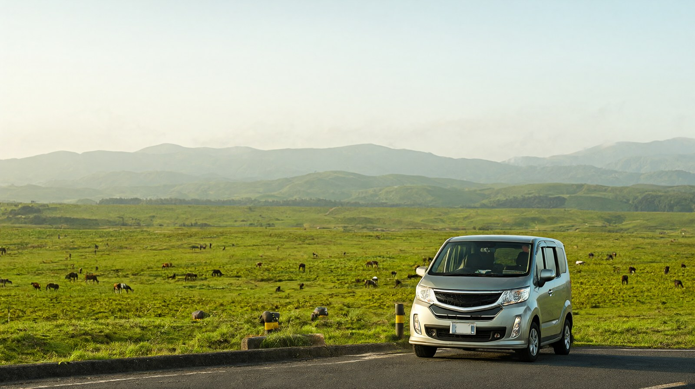

국제운전면허증, 카시트, 도로 상황, 아소 분화 규제를 확인한 아소·구로카와 렌터카 1박 2일 코스
구마모토에서 아소·구로카와 렌터카 일정
기준일 2026년 10월 22일. 성인 2명과 초등학생 1명 가족이 구마모토공항에서 렌터카를 빌려 아소와 구로카와를 도는 일정입니다. 환율은 100엔=853.02원(2026-10-16 고시)이고 원화는 약입니다.
먼저 결론
- 렌터카로 도는 것이 가장 편한 지역입니다. 공항 기준 택시 소요시간은 아소역 약 40분, 아소산 정상 방면 약 45분, 구로카와 약 80분입니다 (구마모토공항 공식 사이트).
- 추천 코스는 1박 2일입니다. 첫날 아소 초원과 대관봉, 저녁 구로카와 숙박, 둘째 날 온천 마을을 걷고 돌아오는 순서입니다.
- 아소산 분화구는 지금 볼 수 없습니다. 분화경계 레벨 2로 분화구에서 약 1㎞ 이내는 출입 금지입니다 (아소 화산방재회의협의회 공식 규제 정보, 2026-10-22 확인).
- 한국에서 발급한 국제운전면허증은 1949년 제네바 협약 형식의 수첩이어야 쓸 수 있습니다 (도요타 렌터카, OTS 렌터카).
- 만 6세 미만 아이는 카시트가 법적 의무입니다. 초등학생 자녀는 나이에 따라 의무 대상이 아닐 수 있으나 어른 안전벨트가 맞을 때까지 카시트를 권장합니다 (도요타 렌터카).
운전 전 서류
| 항목 | 요건 | 출처 |
|---|---|---|
| 국제운전면허증 | 1949년 제네바 협약에 근거한 수첩 형식 (카드나 종이 형식은 안 됨). 제네바 협약 가입국이 발급한 것이어야 하고, 한국의 공식 발급 기관이 발급한 것 | 경시청 공식 안내(2026-10-22 확인), 도요타 렌터카, OTS 렌터카 |
| 유효기간 | 발급일부터 1년이고, 일본에 상륙한 날부터도 1년 이내여야 함. 렌터카 대여일이 유효기간 안이어야 함 | 경시청 공식 안내, 도요타 렌터카, OTS 렌터카 |
| 크기 | 가로 10.5㎝ x 세로 14.8㎝ 수첩형 (도요타 기준) | 도요타 렌터카 |
| 표기 | 조약 이름에 1949년 9월 19일 도로교통협약이 적혀 있어야 함. 사진 부착, 운전 가능 차종에 도장 | 도요타 렌터카, OTS 렌터카 |
| 함께 가져갈 것 | 여권. 한국 운전면허증도 함께 지참을 권장 (렌터카 업체별로 확인 필요) | 도요타 렌터카, OTS 렌터카 |
| 연령 | 18세 이상이라는 비공식 안내가 있음. 대여사 조건(보통 만 21세 이상 등)은 확인 필요 | 비공식 |
- 사설 단체가 발급한 국제운전면허증은 인정되지 않는다고 대여사가 안내합니다 (OTS 렌터카). 한국에서는 공식 발급 기관(도로교통공단 등)에서 받은 것인지 확인하세요.
- 서류가 맞지 않으면 대여가 거절될 수 있다고 도요타 렌터카가 안내합니다. 공항 영업소에서 받기 전에 업체에 서류 사진을 미리 보내 확인하는 방법이 안전합니다.
- 남편과 아내 둘 다 운전할 계획이면 두 사람 모두 같은 서류가 필요하고, 대여 계약에 추가 운전자 등록이 필요한지는 업체별로 확인 필요입니다.
렌터카 수령과 카시트
- 공항에서는 소라요카 비지터센터의 렌터카 카운터에서 수령합니다. 도요타, 닛산, 닛폰, 오릭스, 타임스 등이 목록에 있습니다 (구마모토공항 공식 사이트).
- 카시트: 6세 미만 아이는 카시트 사용이 법으로 의무입니다. 예약할 때 미리 알려야 합니다 (도요타 렌터카).
- 도요타 렌터카 기준 카시트 요금은 베이비·차일드 시트 1회 1,650엔(약 14,100원), 주니어 시트 1회 1,100엔(약 9,400원)입니다 (도요타 렌터카 공식 사이트). 다른 업체의 공식 요금은 이번에 찾지 못해 확인 필요입니다.
- 초등학생 자녀는 6세 이상이면 법적 의무에서는 벗어나지만 체형에 맞는 주니어 시트가 안전합니다. 아이의 나이와 키를 업체에 알리고 필요한 시트를 예약하세요.
- 겨울(12월~3월)에는 아소 산지에서 눈이 쌓이고 영하로 떨어질 수 있습니다. 국토교통성 구마모토 사무소가 겨울용 타이어와 체인 준비를 안내한다고 민간 안내가 전합니다. 겨울 여행이면 업체에 겨울용 타이어 여부를 확인하세요.
고속도로 요금·주차
| 항목 | 확인된 내용 | 상태 |
|---|---|---|
| 고속도로 요금 (구마모토에서 아소 방면, 구로카와 방면) | 공식 요금을 확인하지 못함 | 확인 필요 |
| ETC 카드, 고속도로 패스 | 대여사별 대여 여부와 요금을 확인하지 못함 | 확인 필요 |
| 밀크로드 | 2016년 민간 안내는 통행료 0엔으로 적음. 이번에 공식 확인은 못함 | 확인 필요 (오래된 비공식 정보) |
| 아소산 공원도로 (분화구 방면 유료도로) | 승용차 1,000엔. 현재 닫혀 있다고 안내 (민간, 2026-10-07 확인) | 이용 불가 |
| 아소산 정상 터미널 주차 | 무료, 65대 (민간이 인용한 공식 정보) | 확인됨 (비공식 인용) |
| 구사센리 주차 | 500엔 (약 4,300원), 225대 (아소산 상 방문자센터 공식 안내, 2026-10-22 확인) | 확인됨 |
| 구로카와 온천 마을 주차 | 2015년 민간 안내는 무료 주차장 다수. 최근 요금은 확인하지 못함 | 확인 필요 |
- 아소산 정상 터미널 영업시간은 9:00~16:30입니다 (산코버스 아소산 화구 셔틀 공식 사이트). 아소산 공원도로는 아소 화산방재회의협의회 공식 안내로 가을(11월 1~30일) 8:30~17:30, 겨울(12월 1일~3월 19일) 9:00~17:00에 열립니다. 화구 셔틀은 공원도로 폐쇄를 이유로 9월 2일자 운휴 안내가 남아 있어, 방문 직전에 최신 공지를 확인하세요.
아소산 분화 규제 현황
| 항목 | 내용 | 출처 |
|---|---|---|
| 현재 경계 레벨 | 분화경계 레벨 2 (화구 주변 경보). 화구에서 약 1㎞ 이내 출입 금지 | 아소 화산방재회의협의회 공식 규제 정보 (2026-10-22 확인) |
| 최근 변화 | 6월 21일 레벨 2 발표, 8월 14일 레벨 3, 9월 1일 16시 레벨 2로 하향 | 비공식 안내가 기상청 발표를 인용 (2026-10-07) |
| 분화구 구경 | 현재 불가. 공원도로가 닫혀 있고 분화구 셔틀이 중단 | 비공식 안내가 시와 산코버스 공지를 인용 |
| 열려 있는 곳 | 구사센리, 아소 화산박물관, 기시마다케 (2026년 9월 안내) | 비공식 안내가 박물관과 방문자 센터 공지를 인용 |
| 가스 규정 | 천식, 폐나 심장 질환, 심박동기가 있는 사람, 몸이 좋지 않은 사람은 분화구 구역에 들어갈 수 없음 | 아소 화산방재회의협의회 (비공식 안내가 인용) |
- 레벨이 3으로 올라가면 규제 구역이 약 2㎞, 상황에 따라 최대 4㎞까지 넓어질 수 있어 구사센리와 기시마다케도 구역에 들어갈 수 있다는 비공식 안내가 있습니다. 아침에 공식 규제 페이지를 열어 한 번 더 확인하는 것이 안전합니다.
- 규제 페이지: 아소 화산방재회의협의회(https://www.aso-volcano.jp/info/). 일본어와 영어로 현재 규제가 맨 위에 적힙니다.
지진 영향 구간과 우회
2026년 7월 28일 오후 규모 7.1 지진이 있었습니다 (비공식 안내가 기상청 발표를 인용). 아소시와 구로카와의 상황은 다음과 같습니다.
| 구간 | 확인된 내용 | 우회·대응 | 출처 |
|---|---|---|---|
| 아소시 관광지·숙소·도로 | 7월 31일 아소시 관광협회가 큰 피해 없음을 알림 | 일정 변경 불필요, 출발 전 확인 | 비공식 안내가 인용 |
| 국도 57호 북쪽 복구도로 (아소니시IC~오쓰IC) | 7월 28일 통행금지로 시작, 7월 29일 해제. 9월 3일 밤~4일 아침에 다리 응급공사로 야간 전면 통행금지 | 우회로는 국도 57호와 현도 기쿠치아카미즈선 (국토교통성 공지) | 국토교통성 구마모토 하천국도사무소 |
| 같은 복구도로 9월 24일자 전면 통행금지 공지 | 아소니시IC~오쓰IC 전 구간은 매일 밤 21:00~다음 날 6:00에 10월 19일(월) 밤~24일(토) 아침, 10월 28일(수) 밤~31일(토) 아침 통행금지. 예비일은 11월 2~3일, 4~7일, 9~14일 밤. 아소니시IC~구루마가에리IC는 10월 26일(월) 16시~27일 6시, 27일 19시~28일 6시 (예비일 포함 공지 기준) | 우회로는 공지의 별지 지도에 있음. 본문 글자로는 옮기지 못해 직전 확인 필요 | 국토교통성 구마모토 하천국도사무소 공지 (2026-09-24, 2026-10-22 확인) |
| 국도 57호 다키무로자카 도로 (나미노IC~이치노미야IC) | 2026년 11월 28일 16시 30분 개통 예정 | 개통 전에는 기존 도로 이용 | 국토교통성 사무소 목록 |
| 국도 212호·442호 (구로카와 북쪽 접근) | 8월 15일 기준 지진에 따른 통행금지 게재 없음 | 해당 없음, 직전 확인 | 비공식 안내가 국토교통성 특설 페이지를 인용 |
| 밀크로드·대관봉 | 9월 안내로 피해 없고 정상 | 직전 확인 | 비공식 안내가 현 관광 사이트를 인용 |
| 구로카와 온천 마을 | 진도 4, 7월 29일부터 정상 영업 (일부 료칸은 공사로 휴업) | 숙소 공지 확인 | 비공식 안내가 조합 공지를 인용 (8월 15일 기준) |
- 10월 5일 기준 고속도로가 아닌 국도에서 지진 관련 통행금지가 없다는 비공식 안내가 있습니다. 같은 안내는 야쓰시로 근처 E3A 고속도로 일부 구간이 닫혀 있다고 하는데, 아소와 구로카와 방면 경로와는 다른 쪽입니다.
- 도로 사정은 하루 단위로 바뀝니다. 출발 아침에 국토교통성 구마모토 하천국도사무소(https://www.qsr.mlit.go.jp/kumamoto/)와 구마모토현 도로 통행규제 정보를 확인하세요.
- 구로카와 숙소가 공식 사이트가 아닌 예약 대행으로만 확인되면 전화로 직접 영업 여부를 확인하세요.
소요시간
아래 시간은 휴식을 뺀 대략 값이며 민간 안내와 공항 공식 택시 안내를 섞어 정리했습니다. 가정치로 표시한 항목은 실제 구글 지도 등으로 다시 확인하세요.
| 구간 | 소요시간 | 근거 |
|---|---|---|
| 구마모토공항 → 아소역 | 약 40분, 31.1㎞ | 구마모토공항 공식 사이트 택시 안내 |
| 구마모토공항 → 아소산 정상 | 약 45분, 36.2㎞ | 구마모토공항 공식 사이트 택시 안내 |
| 구마모토공항 → 구로카와 | 약 80분, 58.0㎞ | 구마모토공항 공식 사이트 택시 안내 |
| 구마모토 시내 → 구로카와 | 공항 기준 약 1시간 30분 (밀크로드 경유) | 비공식 안내 (구로카와 온천 안내 사이트) |
| 아소역 → 대관봉 | 차로 약 30분 | 아소 온천 협동조합 안내를 비공식 안내가 인용 |
| 아소역 → 구로카와 | 버스 약 50분. 차는 가정치로 40~60분 | 버스는 비공식 안내, 차는 가정치 |
| 구로카와 → 구마모토공항 | 가정치 약 1시간 30분~2시간 | 위 공항에서 구로카와 시간을 반대로 적용한 가정치 |
코스 제안
추천: 1박 2일 (공항에서 렌터카 수령)
| 시간 | 일정 | 메모 |
|---|---|---|
| 1일차 09:25 | 트리니티항공으로 도착 | 입국 수속과 렌터카 수령에 1시간 안팎 (가정치) |
| 10:30 | 공항에서 출발 | 아소 방면으로 약 40~45분 |
| 11:15 | 점심 | 아소 지역 향토 음식은 허브 글의 붉은 소 덮밥 참고 |
| 12:30 | 구사센리 초원 | 주차 500엔. 말 가까이 가지 말 것 |
| 13:30 | 아소 화산박물관 | 9:00~17:00. 어른 1,300엔, 초등 650엔 (아소 화산박물관 공식 사이트, 최종 입관 16:30). 비 오는 날 실내 대안 |
| 15:00 | 대관봉 또는 밀크로드 | 아소 오방산을 한눈에 봄. 대관봉은 민간 안내 기준 아소역에서 약 30분 |
| 16:30 | 구로카와로 이동 | 해 지기 전에 도착하도록 서두름 |
| 17:30 | 료칸 체크인, 저녁 | 식사 포함 플랜 여부는 숙소별 확인 필요 |
| 2일차 09:30 | 료칸 체크아웃 후 마을 산책 | 목욕 순례권 어른 1,500엔 (약 12,800원), 어린이 700엔 (약 6,000원), 3곳. 공중탕 2곳 각 200엔 |
| 12:00 | 점심 후 출발 | 구마모토 방면으로 약 1시간 30분~2시간 (가정치) |
| 15:00 | 시내 도착 또는 렌터카 반납 | 반납 전 주유. 공항 주유소 8:00~19:30 |
- 귀국편이 대한항공 19:35 출발이면 이 일정이 잘 맞습니다. 공항 도착 목표는 17:35입니다.
- 트리니티항공 10:25 출발편으로 귀국하면 구로카와에서 자는 일정은 무리입니다. 이 경우 2일차 밤을 구마모토 시내에서 보내고 마지막 날 아침 버스를 타세요.
대안: 시내에서 숙박하며 당일치기
| 대안 | 내용 |
|---|---|
| 아소만 당일 | 시내에서 아소 초원과 박물관, 대관봉을 보고 같은 날 돌아오는 코스. 아이에게 부담이 가장 적음 |
| 구로카와만 당일 | 시내에서 약 1시간 30분. 구로카와에서 목욕 순례를 하고 돌아옴. 귀가 운전 부담이 큼 |
| 둘 다 당일 | 가능은 하나 하루 이동이 6시간 안팎이 되어 초등학생 가족에게는 권하지 않음 (가정치) |
비 오는 날 대안
- 아소 화산박물관에 5개 스크린 극장과 분화구 실시간 영상이 있습니다 (비공식 안내가 박물관 소개를 인용).
- 구로카와는 목욕 순례권으로 료칸 탕을 이용해 시간을 보냅니다. 순례권은 노천탕을 다니는 방식이라고 공식 사이트가 안내하므로, 비 오는 날에는 우산이나 우비가 필요할 수 있습니다 (구로카와 온천 공식).
- 안개와 비가 심하면 대관봉 전망이 안 보일 수 있으니 오전과 오후를 바꿔 일정을 조정하세요.
확인 필요 항목
- 렌터카 요금, 보험, ETC 카드 대여 여부, 겨울용 타이어 요금 (도요타 렌터카 공식 사이트에서 카시트 요금만 확인. 다른 업체와 기본 요금은 찾지 못함)
- 구마모토에서 아소와 구로카와까지 고속도로 요금 (공식 요금 페이지를 찾지 못함)
- 밀크로드 통행료 (오래된 비공식 정보만 있음, 공식 정보 검색에서 나오지 않음)
- 구로카와 마을 주차 요금과 주차장 개방 시간 (구로카와 온천 공식 사이트에서 주차 안내를 찾지 못함)
- 국도 57호 북쪽 복구도로 통행금지의 우회로 (공식 공지의 별지 지도에만 있음)
- 공중탕의 어린이 요금 (순례권 어린이 요금은 확인)
- 박물관, 구사센리 등의 유모차·수유실 정보 (이번 조사에서 공식 안내를 찾지 못함)
- 렌터카 업체의 최소 연령과 추가 운전자 규정 (경시청 공식 안내는 연령을 다루지 않음)
공식 출처
- 아소 화산방재회의협의회 규제 정보: https://www.aso-volcano.jp/info/
- 구마모토공항 공식 사이트 교통 안내 (택시 소요시간·거리, 렌터카 업체): https://www.kumamoto-airport.co.jp/en/access/
- 도요타 렌터카 운전면허 안내: https://rent.toyota.co.jp/global_eng/drive/
- 도요타 렌터카 부속품과 카시트: https://rent.toyota.co.jp/global_eng/service/option.html
- 국토교통성 구마모토 하천국도사무소 공지: https://www.qsr.mlit.go.jp/kumamoto/index.html
- 국토교통성 9월 2일 야간 통행금지 공지: https://www.qsr.mlit.go.jp/kumamoto/newstopics_files/20260902/k260902-1.pdf
- 재팬가이드 구마모토, 구로카와 온천: https://www.japan-guide.com/e/e4500.html, https://www.japan-guide.com/e/e4575.html
- 비공식 보조 자료 (본문에 비공식 표시): OTS 렌터카 면허 안내, 아소산 안내 블로그 hiddenjapan-gems.com (2026-10-07), 호텔뱅크 구로카와 현황 기사 (2026-08-15), 구로카와 온천 안내 사이트